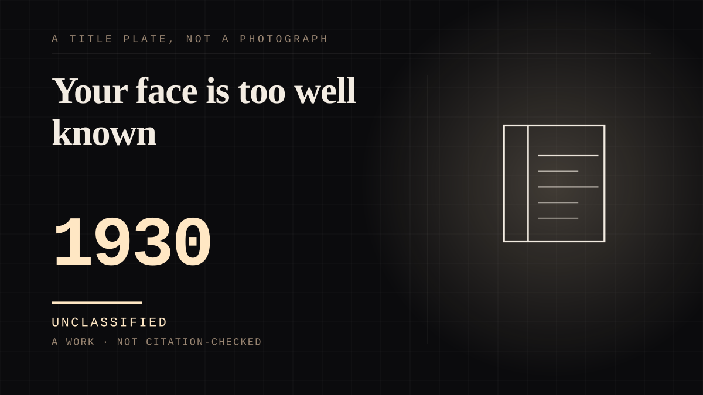

A work · 1930 · Modern
Your face is too well known
A dentist and a painter's sister were made into a national type on purpose, and one of them denied it for five years.

The model denied it for five years, and the denial is what the press covered when it ended. Dr Byron McKeeby, a Cedar Rapids dentist, "didn't want to be famous. He shied away from artist Grant Wood's initial offer" to be the male model. He eventually posed in overalls holding a theatre prop pitchfork, painted in Wood's dental office, at 62. Friends recognised him and joked about the pitchfork's role in his dental procedures, and "McKeeby stood firm in his denials... The real McKeeby was nothing like the dour farmer who challenged the painting's viewers." It was literally national news when McKeeby broke his silence in 1935 and admitted that yes, he was the farmer with the pitchfork; an Associated Press bureau chief had been helping prod him into it. So here is a real person who spent five years refusing a one-sided relationship with a painted version of himself, while a country attached itself to the painting - and the refusal was treated as news because the bond was real enough to be denied.
Wood designed the likeness to fail, and it failed absolutely.
He "exaggerate[d] McKeeby's features so no one would recognize him", and he stretched his sister's face "so that no one would be able to recognize her". Opacity was the design choice - the exact inverse of the made shelf, where the transparency is the design choice - and the painting became "an indelible icon of Americana", described by one framing as "a Rorschach test for the character of the nation". The Whitney's own account is that Wood "sought pictorially to fashion a world of harmony and prosperity that would answer America's need for reassurance at a time of economic and social upheaval occasioned by the Depression", and that "his image as a farmer-painter was as mythical as the fables he depicted in his art". A painter built a figure specifically to be unrecognisable, and it became the most recognised face-pair in the country.
And the sister credited the painting with her own interior.
Nan Wood Graham, an artist and teacher in her own right, said: "Grant made a personality out of me. I would have had a very drab life without [American Gothic]." That is the mirrored and undemanded structure stated out loud by the person it happened to - a woman saying a painting supplied a self she would otherwise not have had, thirty years after she watched strangers build a national character out of her face without asking. She was not a passive sitter either: she posed for her brother for years, kept scrapbooks now in the Iowa Digital Library, and became the caretaker of his legacy after his death in 1942.
And the brother ended it because it worked.
The first reception was hostile - there were critics who said she "looked like the missing link, that her face would turn milk sour" - and the following year Wood painted Portrait of Nan, which a biographer calls "really kind of a love letter from Grant to his sister" and one of the very few mature paintings he kept for himself. Then, reportedly: "It's the last portrait I intend to paint, and it's the last time you will ever pose for me." She was surprised - she had spent years posing - and asked for an explanation. Wood said: "Your face is too well known." That is the moment the figure leaves the model, and it is a brother who says so, plainly, as a piece of information about his own work rather than about her.
The cog is the afterlives.
The image "lent itself to countless parodies in popular culture as well as in the political arena, in advertisements, in television shows such as The Simpsons, in albums, in comic books, on magazine covers, and by Jim Henson's Muppets". Christie's puts its weight beside exactly one other painting: "The only other modern painting to rival its weird multiplicity of afterlives in the fields of homage, parody, cartoon and caricature is Edvard Munch's The Scream." That is the cog register in paint: a shared device with millions of remakes in it, every one of them made by somebody who never met Wood, Nan or McKeeby, and none of them built. The pair are not the point; the machine of faces pointed at them is. The 1977 Hustler topless version is the sharp end of it - Nan was afraid people would think she had authorised it, which is the exact shape of the problem this site is about: a parody attaching itself to a real woman's body.
And the authenticity was manufactured and shipped.
Wood described the pair as "tintypes from my old family album" and then ordered the prim colonial print apron and the spotless overalls from a Chicago mail-order house - Sears, Roebuck. The Gothic window that started the painting was no better: Eldon "had existed for barely a decade when that window was installed. It, too, was mail-ordered from Sears." The national type was bought by post, which is the-figure-you-buy arriving in paint and arriving first - a fictional figure is not needed when the rural American can be assembled from a mail-order catalogue and a dentist.
And an impresario invented the movement to sell it.
The Art Institute's $300 prize and bronze medal were quickly followed by the picture being "championed as the masterpiece of a new American art movement called 'Regionalism', first invented, and then promoted, by an impresario and art dealer from Kansas named Maynard Walker". Wood's response is the best detail in the entry: he "for the most part happily played along with the role of a stay-at-home Iowan rustic prescribed for him by the propaganda of the Regionalist movement. He even posed for photographs in his studio wearing overalls identical to those of his reluctantly disguised dentist." The painter became a parasocial figure himself, playing a role a marketing movement had assigned him, and he played it in his model's costume - one remove from mickey-mouse, where the drawing is licensed by a man whose job was policing what the figure could appear on.
Two honesty notes, because the entry is about a reading rather than about a fact.
The painting is not securely a satire: Wood "consistently rejected suggestions that the painting is a satire of the Midwest and its conservative values", and he said he meant sympathy - "Cities dominated culture, he wrote, yet they were 'far less typically American' than the rural places 'whose power they usurped'", which is the argument of Revolt Against the City (1935). And it drew real hostility at the time: a "storm of protest from Iowa farm wives", one of whom threatened to "smash my head". Wood did not paint a joke at them; he painted an assurance, and they took it as a mockery. That is why this is not filed undemanded on its own - the near side wanted nothing, but the subjects were not asked, and one of them spent five years refusing.
Why visual_art needed this entry rather than a refile.
The medium was added to the closed validated list and had nothing behind it. Moving an existing entry into a new bucket would have made the distribution tidier and the classification a lie - the move this site refuses - so the shelf was filled by writing the thing it was opened for. What that thing turned out to be is a picture with two real people in it, neither of whom consented, one of whom denied it, and a national attachment that outlasted both of their objections.
Where it sits
1900 1900-1949 · 1930 1949
Provenance · 6 source record(s)
- retrievableThe five-year denial, which is the entry's spine. "Dr. Byron Henry McKeeby didn't want to be famous. He shied away from artist Grant Wood's initial offer to be the male model." That "Wood said he'd exaggerate McKeeby's features so no one would recognize him", the two being friends, so McKeeby relented; that Wood painted him in his dental office in the Cedar Rapids Savings Bank Building when McKeeby was 62, wearing overalls and holding a theater prop pitchfork; that friends thought it was him and joked about the pitchfork's role in his dental procedures but "McKeeby stood firm in his denials" and "The real McKeeby was nothing like the dour farmer who challenged the painting's viewers"; and that "It was literally national news when McKeeby broke his silence in 1935 and admitted that, yes, he was the farmer with the pitchfork", with AP bureau chief Cy Douglass helping prod the turnaround through a family connection. Also the 1930 press context: photographs had become permanent fixtures in newspapers, so a picture that prompts different reads in different viewers was irresistible to editors."Who was the farmer in Grant Wood's 'American Gothic'? A Cedar Rapids dentist", The Gazette (Cedar Rapids and Eastern Iowa History) ↗
- retrievableThe sister, the deliberate unrecognisability, and the myth. That she was born 26 July 1899 on a farm near Anamosa, Iowa and was 16 months old when her farmer father died; that in 1928 Grant Wood returned from a working trip to Munich inspired to paint a cottage in Eldon, Iowa; that Graham posed as the woman and their dentist Byron McKeeby as the male; that "People who saw the painting assumed that the portrayed couple was married, but Graham said that her brother intended it to be a picture of a farmer and his daughter"; that "Grant stretched out Graham's face in the picture so that no one would be able to recognize her"; that "Shortly after the painting was finished, the farmers and their wives nearby thought that they were being ridiculed. Those people became fans when they realized that Graham posed for the painting"; and that "In 1977, the magazine Hustler showed a topless version of the painting. Graham was afraid that people would think that she authorized it."Wikipedia, "Nan Wood Graham" ↗
- retrievableThe hostile first reception and the sentence that ends the relationship. That when the painting was shown in 1930 "there were critics who said that she looked like the missing link, that her face would turn milk sour"; that the following year, "as a sort of apology, Grant painted Portrait of Nan, one of his most intriguing works"; the biographer R. Tripp Evans calling it "really kind of a love letter from Grant to his sister" and "a painting that he felt very close to as well, one of very few of his mature paintings that he kept for himself"; and the reported exchange, which is the entry's title: "After completing the painting, Wood reportedly told his sister, 'It's the last portrait I intend to paint, and it's the last time you will ever pose for me.'" She was surprised - she'd spent years posing for him - and asked for an explanation. Wood said, "Your face is too well known." Also that she recalled her brother "kept long hours when he was on a painting spell" and that she "was pretty weak" and he did not have her pose much that day."Meet Grant Wood's Sister, the Woman Made Famous by 'American Gothic'", Smithsonian Magazine, 22 April 2014 ↗
- retrievableWood's own statements about what he was making, and the parody list. That he used his sister Nan and his dentist Dr B. H. McKeeby as models, each posing separately; that the pitchfork "was originally a rake in Wood's sketches for the painting"; that "whether this is a husband and wife or a father and daughter is unclear"; that "Wood intended them as archetypes, remarking, 'These are types of people I have known all my life. I tried to characterize them truthfully-to make them more like themselves than they were in actual life.'"; and that "Wood consistently rejected suggestions that the painting is a satire of the Midwest and its conservative values." Also that "the American Gothic trope lent itself to countless parodies in popular culture as well as in the political arena, in advertisements, in television shows such as The Simpsons, in albums, in comic books, on magazine covers, and by Jim Henson's Muppets." Read in full for the description.Encyclopaedia Britannica, "American Gothic (painting by Wood)" ↗
- retrievableThe movement, the prize, the mail-order clothes, and Wood's own compromises - in his own words. That Wood sent the picture to the juried annual open exhibition at the Art Institute of Chicago, winning a $300 prize and the bronze medal, and that it "was soon to be championed as the masterpiece of a new American art movement called 'Regionalism', first invented, and then promoted, by an impresario and art dealer from Kansas named Maynard Walker", for whom such work "represented a robust all-American riposte to the 'shiploads of rubbish that had been imported from the School of Paris'". Wood's own account of the models: "I finally induced my own maiden sister to pose... I sent to a Chicago mail-order house for the prim, colonial print apron my sister wears and for the trim, spotless overalls the dentist has on." And the detail that closes the loop: "After the unforeseen success of American Gothic, Wood for the most part happily played along with the role of a stay-at-home Iowan rustic prescribed for him by the propaganda of the Regionalist movement. He even posed for photographs in his studio wearing overalls identical to those of his reluctantly disguised dentist." Also the comparison: "The only other modern painting to rival its weird multiplicity of afterlives in the fields of homage, parody, cartoon and caricature is Edvard Munch's The Scream."Christie's, "American Gothic: Grant Wood's Midwestern mystery" ↗
- retrievableThe mail-ordered window, the Hoving line, and the farm wives. That the striking outfits of Wood's models "weren't homespun; he'd ordered them from Sears, Roebuck & Co. in Chicago"; that the Gothic window that started the painting "wasn't the product of a distinctive local culture, either. Eldon had existed for barely a decade when that window was installed. It, too, was mail-ordered from Sears"; that Thomas Hoving, a longtime director of the Metropolitan Museum of Art, called the image a "Rorschach test for the character of the nation"; that Wood "faced 'a storm of protest from Iowa farm wives' - one threatened to 'smash my head'" - while claiming he had painted it "with sympathy", writing in Revolt Against the City (1935) that cities were "far less typically American" than the rural places "whose power they usurped"; and that Wood described the pair as "tintypes from my own family album" although his maternal grandparents were innkeepers and his paternal ones were Virginia slaveholders.Ben Taub, "Beyond the Myth of Rural America", The New Yorker, 23 October 2023 ↗
CHARACTER The historic as character
Connected · 2 out, 0 in
It sits in
The full timeline → · The database → · See it in the atlas →